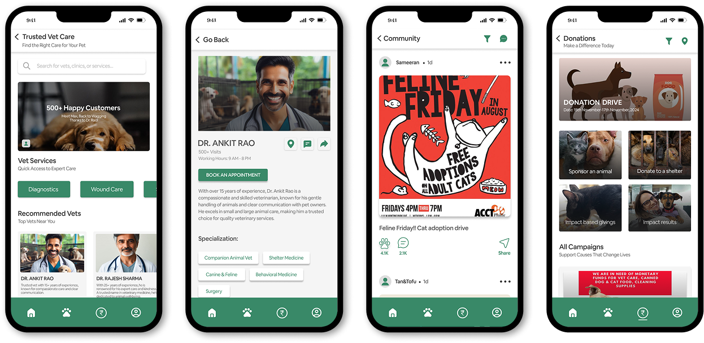
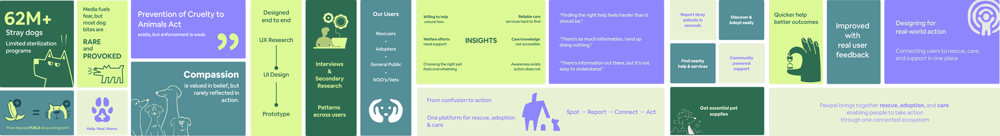

A platform that connects people to pet adoption, rescue support, and animal care — all without the friction.


Helping exists, clarity doesn’t. Users struggle because information is scattered and hard to act on.
I started by exploring how people engage with animal welfare from adoption to rescue support. Looking across NGO websites, adoption platforms, and social media revealed a common pattern: information exists, but it’s scattered, inconsistent, and hard to act on.
How might we help users easily discover nearby shelters, reduce confusion from scattered information, and guide them so they always know what to do next — making animal welfare feel as simple and warm as helping a friend?
Explored existing platforms, mapped user journeys, and structured flows to reduce confusion and guide action.
Instead of jumping straight into UI, I focused on understanding how people currently try to help animals. Through interviews, secondary research, and journey mapping, I identified where users get stuck, confused, or drop off entirely.
Conducted user interviews with adopters and volunteers to understand real behaviors and pain points
Mapped user journeys to identify confusion points and moments where users drop off
Synthesised insights into key patterns and reframed the problem using focused “How Might We” directions
Explored flows through sketches and wireframes before moving into refined interactions
A structured platform that brings adoption, rescue, and care together — making it easier for users to take action without confusion.
PawPal brings adoption, rescue, and care into a single, structured experience. Instead of navigating multiple sources, users can now move through a guided flow — from discovering animals to taking meaningful action.
Unified adoption feed to browse available animals without jumping across platforms
Rescue request flow to quickly report and connect with nearby helpers
Location-based discovery to find shelters, vets, and support nearby
Simplified volunteering and donation flows to reduce effort and increase participation
Designing for emotional contexts requires clarity, simplicity, and constant iteration.
Working on PawPal highlighted how different user behaviour becomes when emotions are involved. When users are trying to help animals, confusion isn’t just inconvenient — it becomes frustrating and discouraging.
Research shapes direction — skipping it leads to solving the wrong problems
Small friction points matter more in emotionally sensitive experiences
Simplicity requires intentional decisions — not just removing elements
Iteration is where the real improvement happens, not in the first solution
The complete write-up — including research artifacts, wireframes, and prototype walkthrough — lives on Behance.